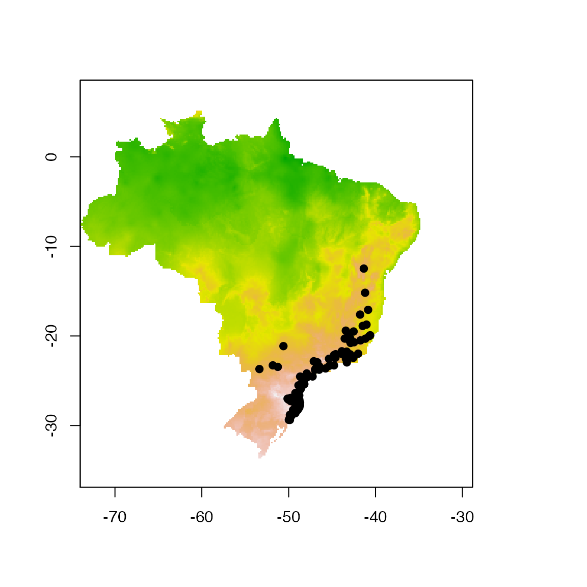
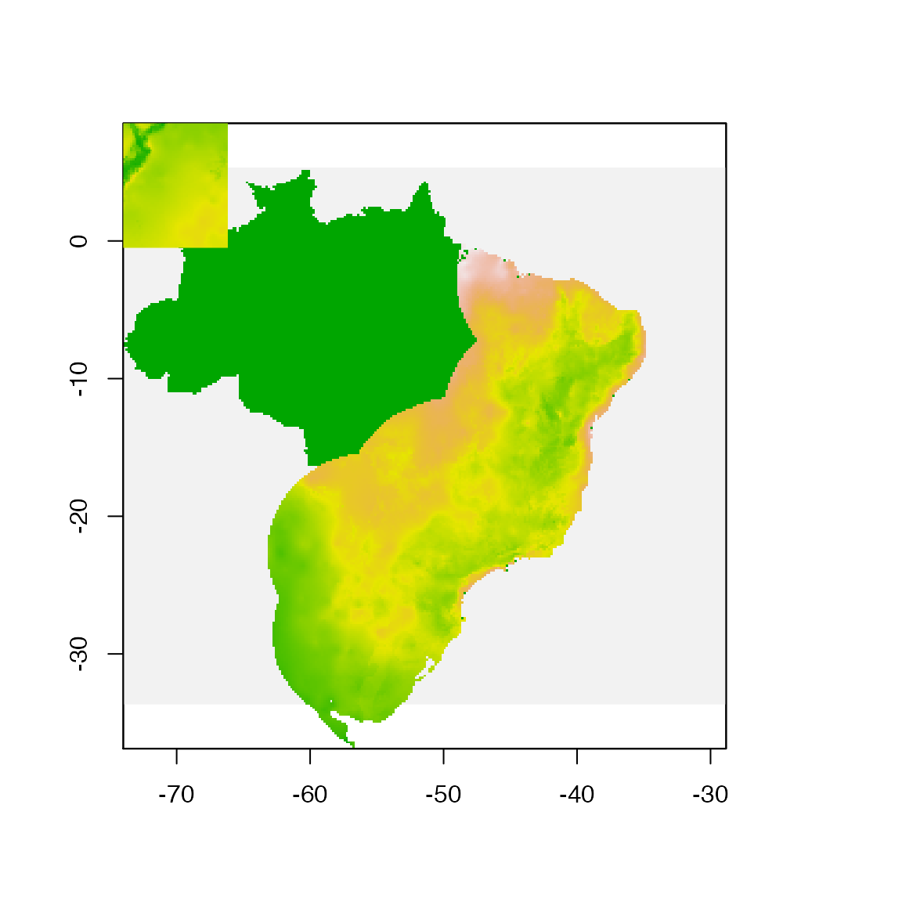
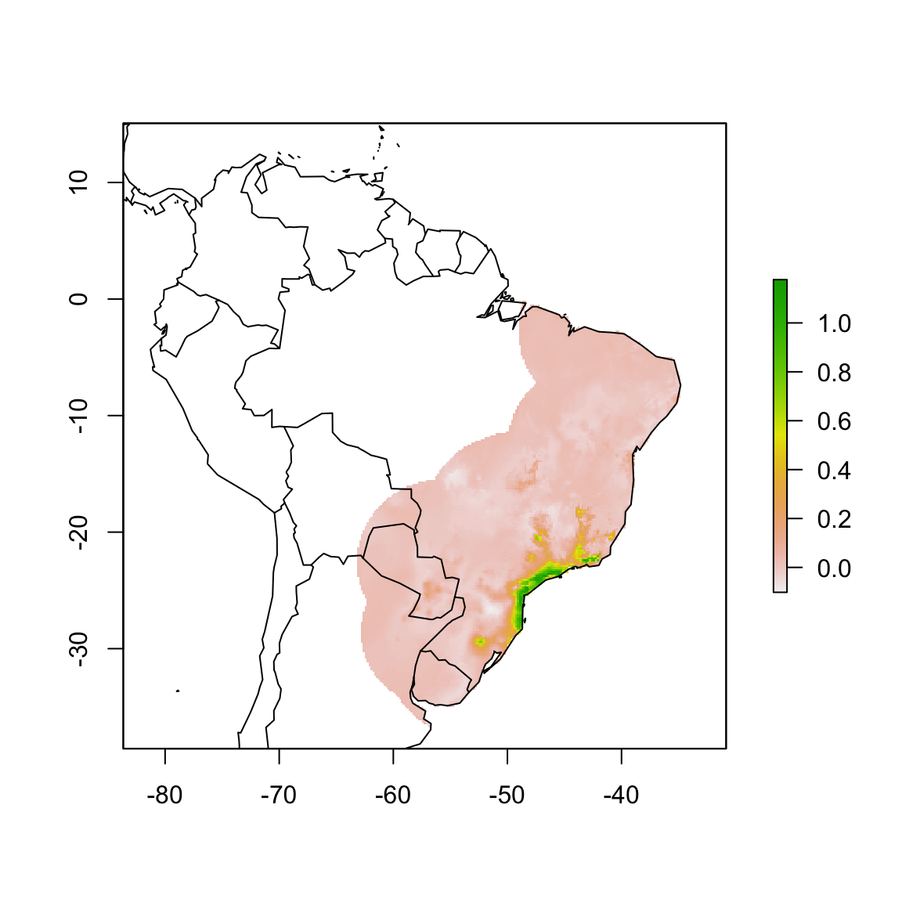
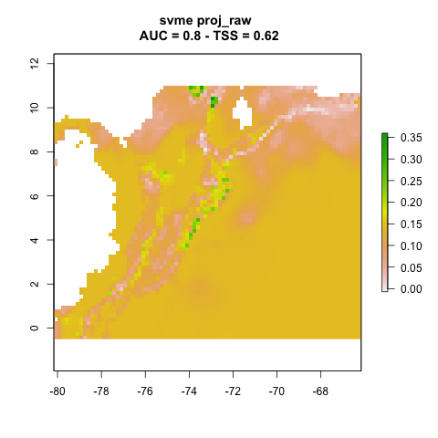
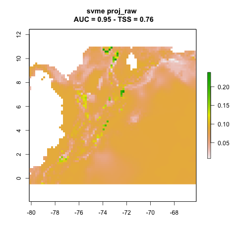
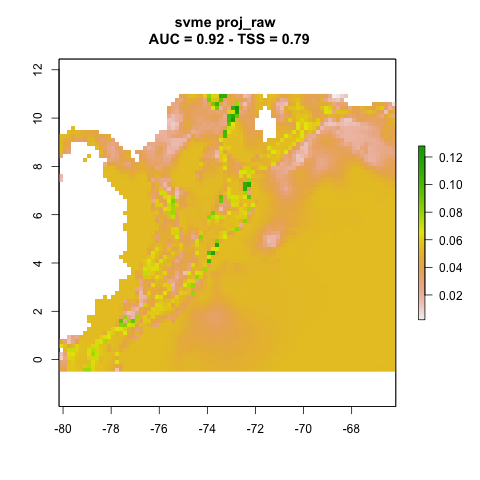
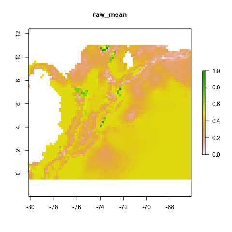
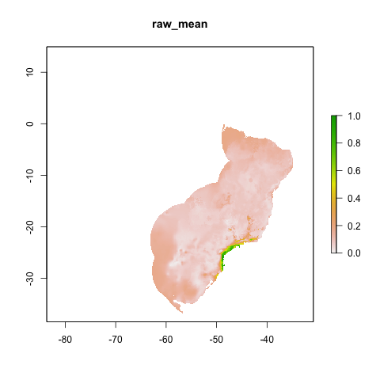
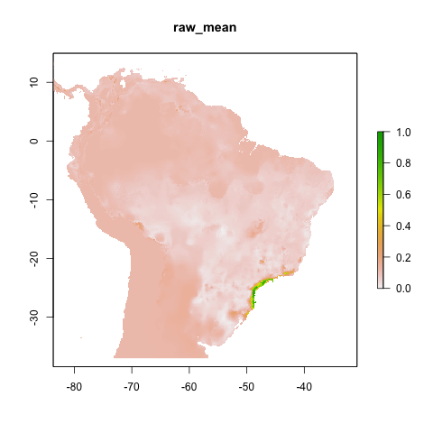
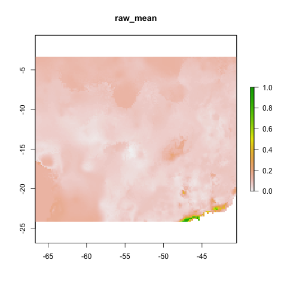

vignettes/articles/projection.Rmd
projection.RmdHere we explain the setup for projecting models in modleR.
Loading required packages.
## Warning: package 'raster' was built under R version 4.0.5We use the standard dataset inside the package modleR. First, from example_occs object we select only data from one species Abarema langsdorffii and create one training set (70% of the data) and one test set (30% of the data) for the data.
## Creating an object with species names
especies <- names(example_occs)[1]
# Selecting only coordinates for the first species
coord1sp <- example_occs[[1]]
head(coord1sp)## sp lon lat
## 343 Abarema_langsdorffii -40.615 -19.921
## 344 Abarema_langsdorffii -40.729 -20.016
## 345 Abarema_langsdorffii -41.174 -20.303
## 346 Abarema_langsdorffii -41.740 -20.493
## 347 Abarema_langsdorffii -42.482 -20.701
## 348 Abarema_langsdorffii -40.855 -17.082
dim(coord1sp)## [1] 104 3## [1] 73
# Making a sample of 70% of species' records
set <- sample(1:nrow(coord1sp), size = ceiling(0.7 * nrow(coord1sp)))
# Creating training data set (70% of species' records)
train_set <- coord1sp[set,]
# Creating test data set (other 30%)
test_set <- coord1sp[setdiff(1:nrow(coord1sp), set), ]Now lets the check our data points. We plot the traning and test data sets with the first axis of the environmental PCA data from the object example_vars.
# selecting only the first PCA axis
predictor <- example_vars[[1]]
# transforming the data frame with the coordinates in a spatial object
pts <- SpatialPoints(coord1sp[,c(2,3)])
# ploting environmental layer
plot(predictor, legend = FALSE)
points(lat ~ lon, data = coord1sp, pch = 19)
We want to fit everything in a small area around the occurrence points and project it to other sample rasterStack objects.
The structure of folder for projections in modleR is key for this step. In this example we have a folder with environmental data "./env". The period means “the current working directory” so this is a subfolder, in this case it is besides the folder where the model outputs are created ("./models_dir") by default.
current_wd
├── models_dir etc...
└── env
├── cropped_proj.tif
└── proj/
├── proj1/
│ ├ var01.tif
│ ├ var02.tif
│ ├ var03.tif
│ └ var04.tif
├── proj2/
│ ├ var01.tif
│ ├ var02.tif
│ ├ var03.tif
│ └ var04.tif
├── proj3/
│ ├ var01.tif
│ ├ var02.tif
│ ├ var03.tif
│ └ var04.tif
└── proj4/
├ var01.tif
├ var02.tif
├ var03.tif
└ var04.tifNote that in this subfolder every projection has its own subfolder, and that all variables have the same names. You can put all the variables (from bio01 to bio19 in Worldclim, for example) and if there’s a variable selection within do_any() the function will use only the selected variables too.
For performing projections in modleR you only need to pass the address of the folder where the projection variables are proj_data_folder = "./env/proj" and set project_model = TRUE.
We show here the example dataset and one of the projections (proj1)
fit_data <- stack("./data/env/cropped_proj.tif")
proj_folder <- "./data/env/proj/proj1/"
proj_data <- list.files(proj_folder, full.names = TRUE) %>%
stack() %>%
.[[1]]
pts <- SpatialPoints(coord1sp[,c(2,3)])
plot(!is.na(example_vars[[1]]), legend = FALSE, add = FALSE)
plot(fit_data[[1]], legend = FALSE, add = TRUE)
plot(proj_data[[1]], legend = FALSE, add = TRUE)
Models will be fit in the area of the Brazilian Atlantic Forest and projected to the Northern Andes in Colombia.
# generating sdmdata
sdm_no_proj <- setup_sdmdata(species_name = especies[1],
occurrences = coord1sp[,-1],
predictors=fit_data,
models_dir="./projections/",
clean_dupl = TRUE,
clean_na = TRUE)
# running models
no_proj <- do_any(species_name = especies[1],
predictors = fit_data,
models_dir = "./projections/",
algorithm = "svme")## Warning: `mutate_()` was deprecated in dplyr 0.7.0.
## Please use `mutate()` instead.
## See vignette('programming') for more help
## This warning is displayed once every 8 hours.
## Call `lifecycle::last_lifecycle_warnings()` to see where this warning was generated.
no_proj.bc <- raster("./projections/Abarema_langsdorffii/present/partitions/svme_cont_Abarema_langsdorffii_1_1.tif")
plot(no_proj.bc)
maps::map(, , add = TRUE)
We make a series of projections in the specified folder: "./env/proj". We use function do_any() and algorithm svme in this example:
names(fit_data) <- paste0("proj1_", 1:6)
# this is just to make sure that all current layers have the same names of the projectio variables.
sdm_yes_proj <- setup_sdmdata(species_name = especies[1],
occurrences = coord1sp[, -1],
predictors = fit_data,
models_dir = "./projections/",
clean_dupl = TRUE,
clean_na = TRUE,
buffer_type = "median",
partition_type = "bootstrap",
boot_n = 3)
yes_proj1 <- modleR::do_any(species_name = especies[1],
predictors = fit_data,
models_dir = "./projections/",
algo = "svme",
project_model = TRUE,
proj_data_folder = "data/env/proj/",
png_partitions = TRUE)The same parameters would work when calling do_many() (not run here)
We can plot the resulting projections. Note that this is one projection per partition (n = 3).
knitr::include_graphics("./projections/Abarema_langsdorffii/proj1/partitions/svme_cont_Abarema_langsdorffii_1_1.png")
knitr::include_graphics("./projections/Abarema_langsdorffii/proj1/partitions/svme_cont_Abarema_langsdorffii_2_1.png")
knitr::include_graphics("./projections/Abarema_langsdorffii/proj1/partitions/svme_cont_Abarema_langsdorffii_3_1.png")
final_model() has a parameter proj_dir that allows it to be run using any projection. Unlike do_any() and do_many() this function needs to be run for each projection. The default projection is "present".
final_model_present <- final_model(species_name = especies[1],
models_dir = "./projections/",
proj_dir = "present",
overwrite = TRUE)## [1] "Tue May 10 13:45:32 2022"## [1] "DONE svme !"For the projected models, each proj_dir has to have the name of the projection
final_model_proj1 <- final_model(species_name = especies[1],
models_dir = "./projections/",
proj_dir = "proj1",
overwrite = TRUE)## [1] "Tue May 10 13:45:47 2022"## [1] "DONE svme !"
knitr::include_graphics("./projections/Abarema_langsdorffii/proj1/final_models/Abarema_langsdorffii_svme_raw_mean.png")
final_model_proj2 <- final_model(species_name = especies[1],
models_dir = "./projections/",
proj_dir = "proj2",
overwrite = TRUE)## [1] "Tue May 10 13:46:06 2022"## [1] "DONE svme !"
knitr::include_graphics("./projections/Abarema_langsdorffii/proj2/final_models/Abarema_langsdorffii_svme_raw_mean.png")
final_model_proj3 <- final_model(species_name = especies[1],
models_dir = "./projections/",
proj_dir = "proj3",
overwrite = TRUE)## [1] "Tue May 10 13:46:15 2022"## [1] "DONE svme !"
knitr::include_graphics("./projections/Abarema_langsdorffii/proj3/final_models/Abarema_langsdorffii_svme_raw_mean.png")
final_model_proj4 <- final_model(species_name = especies[1],
models_dir = "./projections/",
proj_dir = "proj4",
overwrite = TRUE)## [1] "Tue May 10 13:46:23 2022"## [1] "DONE svme !"
knitr::include_graphics("./projections/Abarema_langsdorffii/proj4/final_models/Abarema_langsdorffii_svme_raw_mean.png")